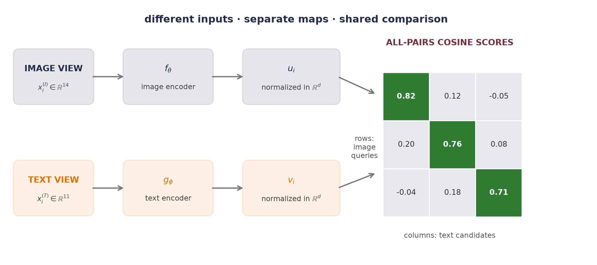
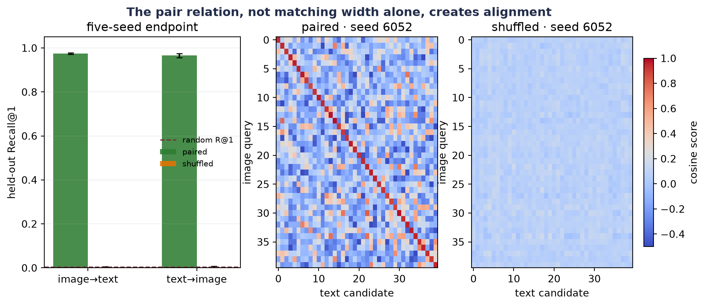

20 Multimodal Learning: One Space, Two Views
We have learned vision and language in separate coordinate systems. Chapter 16 turned an image into patch tokens. Chapters 14 and 15 turned text into contextual token representations. Those encoders can each organize their own modality—but nothing says that an image vector and a text vector mean the same thing merely because they have the same length.
Let us make the problem concrete. Suppose row 7 of an image table and row 7 of a text table describe the same event. The image has 14 measured coordinates; the text has 11. We do not need either raw coordinate system to imitate the other. We need two learned maps that preserve the pair relation:
\[ \text{image view} \;\longrightarrow\; \text{shared coordinates} \;\longleftarrow\; \text{text view}. \]
This is the central move in multimodal representation learning. Different modalities keep different encoders, while paired observations teach those encoders how to become comparable. The learned space can support cross-modal retrieval and, under a carefully bounded candidate construction, zero-shot classification. It does not by itself create a caption, synthesize an image, or prove that the representation has captured every meaning we care about—that boundary will matter throughout the chapter.
The small matrix already tells us what the training problem must do. Each row is one image query. Each column is one text candidate. Row 1 should select column 1, row 2 should select column 2, and so on. We have seen this machine before.
20.1 Chapter 2 returns: scores become weights
Let a minibatch contain \(B\) declared pairs \((x_i^{(I)},x_i^{(T)})\). The image encoder \(f_\theta:\mathbb{R}^{d_I}\to\mathbb{R}^{d}\) and text encoder \(g_\phi:\mathbb{R}^{d_T}\to\mathbb{R}^{d}\) may have completely different internal architectures. Their interiors may differ completely—their outputs must agree only in the last dimension. We normalize each output to unit length:
\[ u_i=\frac{f_\theta(x_i^{(I)})}{\lVert f_\theta(x_i^{(I)})\rVert_2}, \qquad v_i=\frac{g_\phi(x_i^{(T)})}{\lVert g_\phi(x_i^{(T)})\rVert_2}, \qquad u_i,v_i\in\mathbb{R}^{d}. \tag{20.1}\]
Now the dot product is cosine similarity. For every cross-modal pair in the batch, form
\[ S_{ij}=\frac{u_i^\top v_j}{\tau}, \qquad \matr{S}\in\mathbb{R}^{B\times B}, \tag{20.2}\]
where \(\tau>0\) is the temperature. Dividing by a small temperature spreads the logits farther apart; a larger temperature softens them. Temperature does not decide which pair is correct—it decides how sharply the softmax reacts to score differences.
Chapter 2 introduced softmax as the scores-to-weights machine. Apply it across row \(i\):
\[ p^{I\rightarrow T}_{ij} =\frac{\exp(S_{ij})}{\sum_{k=1}^{B}\exp(S_{ik})}. \tag{20.3}\]
The declared mate of image \(i\) is text \(i\), so the image-to-text loss is ordinary cross-entropy with labels \(0,1,\ldots,B-1\):
\[ \mathcal{L}_{I\rightarrow T} =-\frac{1}{B}\sum_{i=1}^{B}\log p^{I\rightarrow T}_{ii}. \tag{20.4}\]
This form is commonly called a contrastive or InfoNCE-style objective. The batch does two jobs at once—it supplies \(B\) declared matches along the diagonal, and for each query it supplies \(B-1\) alternative candidates off the diagonal. We do not need to write a separate binary loss for every pair—the score matrix organizes the whole comparison. And note which case this is in Section 4.6.1’s taxonomy: Case 3. The batch is not estimating some full-data contrastive loss — the \(B-1\) candidates define the objective, so changing \(B\) changes what is being optimized, and batch size here is protocol, reported like any other design choice.
But one direction asks only whether each image can choose its text. Turn the score matrix around and ask whether each text can choose its image:
\[ \mathcal{L}_{T\rightarrow I} =-\frac{1}{B}\sum_{j=1}^{B} \log\frac{\exp(S_{jj})}{\sum_{k=1}^{B}\exp(S_{kj})}. \tag{20.5}\]
The symmetric batch contrastive loss is
\[ \mathcal{L}_{\mathrm{sym}} =\frac{1}{2} \left(\mathcal{L}_{I\rightarrow T}+\mathcal{L}_{T\rightarrow I}\right). \tag{20.6}\]
Notice the exact reuse: Equation 20.3 is Chapter 2’s multiclass classifier, but the classes are the candidates currently in the batch. The class set changes with the batch—what remains fixed is the rule that the paired row and column share an index.
NotePaired data is supervision
No manual object class is required, but the correspondence \((x_i^{(I)},x_i^{(T)})\) is still a training label. In web data that relation may be weak, incomplete, or wrong. Calling the procedure “self-supervised” must not erase the work, noise, consent, or provenance involved in creating those pairs.
What counts as a negative?
The loss knows declared mates—not semantic truth. An off-diagonal caption may describe the same concept as the diagonal caption. Two photographs may show the same event. In those cases the standard one-positive loss treats a plausible match as an alternative to suppress. Larger batches provide more alternatives—but they can also provide more false negatives.
This distinction is easy to miss because the code is so compact:
image_embedding = F.normalize(image_encoder(image), dim=-1) # (B, d)
text_embedding = F.normalize(text_encoder(text), dim=-1) # (B, d)
logits = image_embedding @ text_embedding.T / temperature # (B, B)
labels = torch.arange(logits.shape[0])
loss = 0.5 * (
F.cross_entropy(logits, labels)
+ F.cross_entropy(logits.T, labels)
)Every line has a contract. The two encoders end at the same width; normalization makes the dot product angular; the transpose reverses retrieval direction; and the target indices assert that the batch diagonal contains the pair relation. If the data loader shuffles one modality without shuffling the other, the program still runs—the supervision has simply become false.
20.2 Make the pair relation learnable
Let us test that last claim directly. We will not download images or tokenize a corpus. Instead, one hidden five-dimensional event generates two noisy nonlinear views: a 14-coordinate “image” measurement and an 11-coordinate “text” measurement. The raw features differ, but row \(i\) in one table really does share a latent event with row \(i\) in the other.
The protocol is fixed before the endpoint is opened:
- 1,200 unique pairs are generated once, then split into 720 fit, 180 validation, and 300 held-out endpoint rows. Standardization uses fit statistics only—the validation and endpoint rows contribute no preprocessing estimates.
- Each tower is a two-layer MLP and ends at a normalized 16-dimensional embedding. The complete model has 2,392 parameters.
- Five model seeds, 6050–6054, share the same paired initialization and minibatch schedule between conditions. AdamW, 160 epochs, batch size 120, and \(\tau=0.08\) are fixed.
- The control replaces the fit-pair relation with one study-wide fixed derangement—every fit image is assigned the wrong text, with no fixed points. Architecture, initialization, optimizer, update count, and schedules stay matched.
- Both conditions select checkpoints by the correct validation-pair loss. The 300-row endpoint is not used for model, hyperparameter, checkpoint, stopping, or analysis-design decisions within this study; it is consulted after those choices are fixed.
The metric is Recall@\(k\)—for each query, rank every candidate in the other modality. Recall@\(k\) is one when the declared mate lies among the first \(k\) candidates and zero otherwise, then averaged across queries. With 300 unique candidates, random ranking has expected Recall@1 of \(1/300=0.0033\) and Recall@5 of \(5/300=0.0167\).
Run the five-seed paired-versus-shuffled retrieval study
@dataclass(frozen=True)
class PairedSplit:
image: Tensor
text: Tensor
def make_paired_data() -> tuple[PairedSplit, PairedSplit, PairedSplit]:
generator = torch.Generator().manual_seed(1206050)
latent_dim, image_dim, text_dim = 5, 14, 11
latent = torch.randn(1_200, latent_dim, generator=generator)
image_map = torch.randn(latent_dim, image_dim, generator=generator)
text_map = torch.randn(latent_dim, text_dim, generator=generator)
image = torch.tanh(latent @ image_map / latent_dim**0.5)
text = torch.tanh(latent @ text_map / latent_dim**0.5)
image += 0.045 * torch.randn(image.shape, generator=generator)
text += 0.045 * torch.randn(text.shape, generator=generator)
fit_end, validation_end = 720, 900
image_mean = image[:fit_end].mean(0, keepdim=True)
image_std = image[:fit_end].std(0, keepdim=True).clamp_min(1e-6)
text_mean = text[:fit_end].mean(0, keepdim=True)
text_std = text[:fit_end].std(0, keepdim=True).clamp_min(1e-6)
image = (image - image_mean) / image_std
text = (text - text_mean) / text_std
return (
PairedSplit(image[:fit_end], text[:fit_end]),
PairedSplit(image[fit_end:validation_end], text[fit_end:validation_end]),
PairedSplit(image[validation_end:], text[validation_end:]),
)
class TwoTower(nn.Module):
def __init__(self, image_dim: int, text_dim: int, width: int = 40, embed_dim: int = 16):
super().__init__()
self.image_encoder = nn.Sequential(
nn.Linear(image_dim, width), nn.ReLU(), nn.Linear(width, embed_dim)
)
self.text_encoder = nn.Sequential(
nn.Linear(text_dim, width), nn.ReLU(), nn.Linear(width, embed_dim)
)
def forward(self, image: Tensor, text: Tensor) -> tuple[Tensor, Tensor]:
image_embedding = F.normalize(self.image_encoder(image), dim=-1)
text_embedding = F.normalize(self.text_encoder(text), dim=-1)
return image_embedding, text_embedding
def symmetric_loss(image_embedding: Tensor, text_embedding: Tensor, tau: float = 0.08) -> Tensor:
logits = image_embedding @ text_embedding.T / tau # (B, B)
labels = torch.arange(logits.shape[0])
return 0.5 * (
F.cross_entropy(logits, labels) + F.cross_entropy(logits.T, labels)
)
@torch.no_grad()
def pair_loss(model: TwoTower, split: PairedSplit) -> float:
model.eval()
image_embedding, text_embedding = model(split.image, split.text)
return float(symmetric_loss(image_embedding, text_embedding))
@torch.no_grad()
def retrieval_metrics(model: TwoTower, split: PairedSplit) -> dict[str, float]:
model.eval()
image_embedding, text_embedding = model(split.image, split.text)
scores = image_embedding @ text_embedding.T
target = torch.arange(scores.shape[0])
def recall_at_k(matrix: Tensor, k: int) -> float:
candidates = matrix.topk(k, dim=1).indices
return float((candidates == target[:, None]).any(dim=1).float().mean())
return {
"I→T R@1": recall_at_k(scores, 1),
"T→I R@1": recall_at_k(scores.T, 1),
"I→T R@5": recall_at_k(scores, 5),
"T→I R@5": recall_at_k(scores.T, 5),
}
def derangement(size: int, generator: torch.Generator) -> Tensor:
target = torch.arange(size)
while True:
order = torch.randperm(size, generator=generator)
if not bool((order == target).any()):
return order
def train_tower(
seed: int,
fit_split: PairedSplit,
validation_split: PairedSplit,
shuffled_pairs: bool,
) -> TwoTower:
torch.manual_seed(seed)
model = TwoTower(fit_split.image.shape[1], fit_split.text.shape[1])
optimizer = torch.optim.AdamW(model.parameters(), lr=2e-3, weight_decay=1e-3)
pair_generator = torch.Generator().manual_seed(88_000)
text_order = (
derangement(len(fit_split.text), pair_generator)
if shuffled_pairs else torch.arange(len(fit_split.text))
)
schedule_generator = torch.Generator().manual_seed(99_000 + seed)
schedules = [
torch.randperm(len(fit_split.image), generator=schedule_generator)
for _ in range(160)
]
best_validation = float("inf")
best_state: dict[str, Tensor] | None = None
for epoch, order in enumerate(schedules, start=1):
model.train()
for rows in order.split(120):
image_embedding, text_embedding = model(
fit_split.image[rows], fit_split.text[text_order[rows]]
)
loss = symmetric_loss(image_embedding, text_embedding)
optimizer.zero_grad(set_to_none=True)
loss.backward()
optimizer.step()
if epoch % 5 == 0:
validation_loss = pair_loss(model, validation_split)
if validation_loss < best_validation:
best_validation = validation_loss
best_state = copy.deepcopy(model.state_dict())
assert best_state is not None
model.load_state_dict(best_state)
return model
fit_split, validation_split, held_out_split = make_paired_data()
models: dict[tuple[int, str], TwoTower] = {}
records: list[dict[str, object]] = []
for seed in range(6050, 6055):
for condition, shuffled_pairs in (("paired", False), ("shuffled", True)):
model = train_tower(seed, fit_split, validation_split, shuffled_pairs)
models[(seed, condition)] = model
records.append({
"seed": seed,
"condition": condition,
"validation": retrieval_metrics(model, validation_split),
})
# The endpoint is consulted after every design and checkpoint decision above.
for record in records:
model = models[(int(record["seed"]), str(record["condition"]))]
record["held_out"] = retrieval_metrics(model, held_out_split)
def report(split_name: str, key: str) -> None:
print(split_name)
for condition in ("paired", "shuffled"):
chosen = [record for record in records if record["condition"] == condition]
fields = list(chosen[0][key].keys())
summary = []
for field in fields:
values = [float(record[key][field]) for record in chosen]
summary.append(f"{field} {mean(values):.4f} (SD {stdev(values):.4f})")
print(f" {condition:8s}: " + "; ".join(summary))
def report_paired_contrast(field: str) -> None:
differences = []
for seed in range(6050, 6055):
paired = next(
record for record in records
if record["seed"] == seed and record["condition"] == "paired"
)
shuffled = next(
record for record in records
if record["seed"] == seed and record["condition"] == "shuffled"
)
differences.append(
float(paired["held_out"][field]) - float(shuffled["held_out"][field])
)
print(
f"paired−shuffled held-out {field}: "
f"{mean(differences):.4f} (paired SD {stdev(differences):.4f})"
)
parameter_count = sum(parameter.numel() for parameter in models[(6050, "paired")].parameters())
print(f"split sizes: fit={len(fit_split.image)}, validation={len(validation_split.image)}, held-out={len(held_out_split.image)}")
print(f"parameters: {parameter_count:,}; model seeds: 6050–6054")
report("validation", "validation")
report("held-out endpoint", "held_out")
report_paired_contrast("I→T R@1")
report_paired_contrast("T→I R@1")
print(f"held-out random-ranking expectations: R@1={1 / 300:.4f}; R@5={5 / 300:.4f}")split sizes: fit=720, validation=180, held-out=300
parameters: 2,392; model seeds: 6050–6054
validation
paired : I→T R@1 0.9911 (SD 0.0084); T→I R@1 0.9900 (SD 0.0061); I→T R@5 1.0000 (SD 0.0000); T→I R@5 1.0000 (SD 0.0000)
shuffled: I→T R@1 0.0044 (SD 0.0046); T→I R@1 0.0078 (SD 0.0063); I→T R@5 0.0233 (SD 0.0133); T→I R@5 0.0222 (SD 0.0152)
held-out endpoint
paired : I→T R@1 0.9747 (SD 0.0038); T→I R@1 0.9660 (SD 0.0092); I→T R@5 1.0000 (SD 0.0000); T→I R@5 1.0000 (SD 0.0000)
shuffled: I→T R@1 0.0027 (SD 0.0028); T→I R@1 0.0027 (SD 0.0043); I→T R@5 0.0113 (SD 0.0084); T→I R@5 0.0100 (SD 0.0097)
paired−shuffled held-out I→T R@1: 0.9720 (paired SD 0.0038)
paired−shuffled held-out T→I R@1: 0.9633 (paired SD 0.0105)
held-out random-ranking expectations: R@1=0.0033; R@5=0.0167Across the five seeds, the paired condition reaches validation Recall@1 of 0.9911 image-to-text and 0.9900 text-to-image. The shuffled control reaches only 0.0044 and 0.0078. That validation separation is the predeclared mechanism check—the towers can align unseen views only when the fit pairs carry the true correspondence.
On the single held-out endpoint, paired image-to-text Recall@1 is 0.9747 (sample SD 0.0038 across model seeds), and paired text-to-image Recall@1 is 0.9660 (SD 0.0092). Both Recall@5 means are 1.0000. The shuffled condition stays at 0.0027 (SD 0.0028) and 0.0027 (SD 0.0043) for Recall@1, close to the 0.0033 random-ranking expectation. Its Recall@5 means, 0.0113 and 0.0100, remain in the same small-sample neighborhood as the 0.0167 random expectation.
Because the two conditions share seeds, the primary top-1 comparison is paired within seed rather than reconstructed from those marginal summaries. The paired-minus-shuffled held-out contrast is 0.9720 (paired SD 0.0038) image-to-text and 0.9633 (paired SD 0.0105) text-to-image. The endpoint made none of the model, hyperparameter, checkpoint, stopping, or analysis-design decisions above; its values are reported and interpreted only after that lock. It is not being reserved for unrelated future work.
These standard deviations describe optimization variation on one fixed synthetic dataset and one fixed derangement—they are not uncertainty intervals for a population of image–text tasks. The study establishes one finite mechanism: correct pair structure is sufficient for these small towers to learn cross-view retrieval, while the matched derangement removes that generalizable signal. It does not estimate what CLIP, ALIGN, or any natural-data model will achieve.
Figure code: held-out retrieval and representative score matrices
def held_values(condition: str, field: str) -> list[float]:
return [
float(record["held_out"][field])
for record in records
if record["condition"] == condition
]
@torch.no_grad()
def score_window(model: TwoTower, split: PairedSplit, size: int = 40) -> Tensor:
model.eval()
image_embedding, text_embedding = model(split.image[:size], split.text[:size])
return image_embedding @ text_embedding.T
fig, axes = plt.subplots(1, 3, figsize=(11, 4.2), gridspec_kw={"width_ratios": [1.15, 1, 1]})
conditions = ["paired", "shuffled"]
directions = ["I→T R@1", "T→I R@1"]
x = np.arange(len(directions))
width = 0.32
for offset, condition, color in ((-width / 2, "paired", green), (width / 2, "shuffled", orange)):
values = [held_values(condition, field) for field in directions]
axes[0].bar(
x + offset,
[mean(value) for value in values],
width,
yerr=[stdev(value) for value in values],
capsize=3,
color=color,
alpha=0.88,
label=condition,
)
axes[0].axhline(1 / 300, color=wine, lw=1.2, ls="--", label="random R@1")
axes[0].set_xticks(x, ["image→text", "text→image"])
axes[0].set_ylim(0, 1.05)
axes[0].set_ylabel("held-out Recall@1")
axes[0].set_title("five-seed endpoint")
axes[0].legend(frameon=False, fontsize=8, loc="center right")
axes[0].grid(axis="y", alpha=0.2)
last_image = None
for axis, condition in zip(axes[1:], conditions):
matrix = score_window(models[(6052, condition)], held_out_split)
last_image = axis.imshow(matrix, cmap="coolwarm", vmin=-0.5, vmax=1.0, aspect="auto")
axis.set_title(f"{condition} · seed 6052")
axis.set_xlabel("text candidate")
axis.set_ylabel("image query")
fig.colorbar(last_image, ax=axes[1:], fraction=0.025, pad=0.03, label="cosine score")
fig.suptitle("The pair relation, not matching width alone, creates alignment", color=navy,
fontsize=12, weight="bold")
plt.show()
The control is stronger than showing a falling training loss—with shuffled pairs, the model can spend capacity fitting accidental associations in the fit table. The correct validation relation refuses to reward that memorization. This is exactly why the experimentation interlude insisted: tune the contender; ablate the claim. Here the claim is that paired correspondence teaches alignment, so pairing is the variable the ablation breaks.
There is also a picture of what training did to the geometry. Project the two towers’ embeddings of the same held-out rows into two dimensions, before and after training:
20.3 Retrieval is not generation
What has the two-tower model learned to do? Given an image query and a finite text candidate set, it ranks the candidates. Given a text query and a finite image set, it ranks those. This is cross-modal retrieval:
\[ \widehat{j}(x^{(I)}) =\argmax_{j\in\{1,\ldots,M\}} \;u(x^{(I)})^\top v(x_j^{(T)}). \tag{20.7}\]
The answer must already be present among the \(M\) candidates. The model has no decoder over text tokens and no sampling distribution over images. Chapter 19 made the generative contract explicit—a random source, a conditional or marginal distribution, and a sampling rule. A similarity function supplies none of those by itself.
This distinction prevents a common category error—treating every shared embedding as a generator:
| Task | Input | Output rule | What must already exist? |
|---|---|---|---|
| image-to-text retrieval | image query | rank text embeddings | text candidate pool |
| text-to-image retrieval | text query | rank image embeddings | image candidate pool |
| image classification by text | image query | rank class descriptions | chosen descriptions |
| image captioning | image | sample or decode text tokens | conditional language decoder |
| text-to-image generation | text | sample an image-valued process | conditional image generator |
A larger vision–language system may combine a vision encoder, an adapter, and a language decoder. It may train with contrastive, matching, and generative objectives. That composition can support generation—but the new capability comes from the decoder and its objective, not from renaming retrieval.
Zero-shot classification is retrieval over descriptions
Suppose a task supplies \(C\) class names. Write one description for each class, encode those descriptions once, and retrieve the description closest to a new image:
\[ \widehat{c} =\argmax_{c\in\{1,\ldots,C\}} \frac{f_\theta(x)^{\top}g_\phi(t_c)} {\lVert f_\theta(x)\rVert_2\lVert g_\phi(t_c)\rVert_2}. \tag{20.8}\]
This is zero-shot classification in the CLIP-style operational sense: no task-specific parameter update is made before this candidate-ranking step. The phrase does not mean that the underlying concept was absent from pretraining. It does not mean that no human chose the class set or wrote the descriptions. It does not mean that the same prediction survives a different prompt, candidate pool, language, or distribution.
Chapter 17 used “zero-shot” for prompting a fixed language model without demonstrations. Here it means classifying with fixed encoders and text prototypes. Both avoid a task-specific weight update—but their inputs, outputs, and evaluation contracts differ.
WarningTrap: a softmax score is conditional on its candidate set
Add a near-synonym, remove a competing description, or change the prompt template and the softmax denominator changes. A high weight within one candidate set is not a candidate-independent probability that the description is true. Report the candidate construction and prompt policy with the metric.
20.4 Shortcuts enter through the pair definition
Contrastive learning rewards whatever makes the diagonal distinguishable. We hope that the useful signal is semantic: the image and text describe the same scene. The model may find an easier route.
- A camera watermark and a caption-source tag may identify the same website. The towers can align sources rather than content.
- Near-duplicate images may cross the split with paraphrased captions. Retrieval then measures leakage, not transfer.
- A broad caption such as “an outdoor scene” may fit many images. The diagonal-only target pretends there is one correct mate.
- A candidate pool may make the task artificially easy. Retrieving a dog caption among unrelated equations is different from retrieving it among fine-grained dog breeds.
- Aggregate recall may hide poor behavior for a language, geographic region, image style, or social group that is rare in the paired data.
These are not side issues—the data contract defines what the objective can learn. Natural-language supervision is attractive because paired text is abundant and rich. The same scale can carry noise, stereotypes, copyrighted material, private information, and uneven coverage. A responsible model card therefore describes how pairs were obtained, filtered, licensed, and audited, not only how many there were.
A minimum evaluation contract
Before accepting a multimodal retrieval result, ask seven questions:
- What is the unit of pairing? One image–caption record, one entity with several views, one time-aligned segment, or something else?
- What can cross a split? Split by the underlying entity or source when row-level splitting would leak near duplicates.
- What is a valid match? If several candidates are correct, use multi-positive labels or a metric that does not mark valid matches wrong.
- What is the candidate pool? State its size, construction, duplicates, and difficulty. Recall@1 over 100 candidates is not Recall@1 over one million.
- Which direction is measured? Image-to-text and text-to-image can behave differently—the symmetric training loss does not guarantee identical retrieval.
- Which shortcuts were ablated? Shuffle pairs, mask a suspected nuisance, remove one modality, or construct a hard candidate set that defeats metadata matching.
- Where were decisions made? Report the seed panel, validation choices, final endpoint policy, subgroup slices, and qualitative failure audit.
Our synthetic study satisfies a narrow version of this contract. The unique latent row is the pairing unit; splits do not overlap; the candidate pool is the complete split; both directions are reported; the shuffled-pair ablation receives a matched budget; and the held-out endpoint makes no model, hyperparameter, checkpoint, stopping, or analysis-design decision. Natural multimodal data makes every one of those lines harder—not optional.
NoteCheck yourself
Close the book for one minute and retrieve the contract before reading the recap.
- Why do equal embedding widths fail to align two modalities by themselves?
- What experiment distinguishes a learned pair relation from accidental memorization?
- Why can a dual encoder retrieve a caption without being able to generate one?
20.5 Okay, so — two towers learn a comparison, not a world model
Multimodal learning begins with a relation between views. Separate encoders map those views into normalized shared coordinates; cosine similarities fill a cross-modal score matrix; and Chapter 2’s scores-to-weights machine turns each row and column into a contrastive classification problem. The symmetric objective teaches retrieval in both directions.
The shuffled-pair study shows what carries the supervision. With the true fit relation, small towers retrieve held-out mates far above random ranking. Break the relation while holding the training budget fixed, and the generalizable signal disappears. Matching embedding width was never enough—the rows had to mean something together.
From there, keep the capability boundary clear. Retrieval selects an existing candidate. Zero-shot classification retrieves among human-supplied descriptions. Generation needs a decoder and sampling contract. In every case, the pair definition, candidate pool, split unit, and failure slices belong beside the metric. The model can only learn the alignment that the data actually declares.
Sources and further reading
- van den Oord, Li, and Vinyals, “Representation Learning with Contrastive Predictive Coding” (2018), introduced the InfoNCE name and probabilistic contrastive formulation in predictive representation learning.
- Radford et al., “Learning Transferable Visual Models From Natural Language Supervision” (2021), introduced CLIP’s paired image–text dual-encoder training and zero-shot transfer program; the reported study used 400 million internet image–text pairs.
- Jia et al., “Scaling Up Visual and Vision-Language Representation Learning With Noisy Text Supervision” (2021), developed ALIGN’s dual-encoder contrastive approach with a deliberately noisy large paired corpus.
- PyTorch documentation for
torch.nn.functional.normalizeandtorch.nn.functional.cross_entropyspecifies the two framework operations used in the executable study.
Exercises
(Pencil.) Let a batch have score matrix \(\matr{S}\in\mathbb{R}^{4\times4}\). Write the image-to-text loss for row 2 and the text-to-image loss for column 2. Then explain why transposing the logits changes the competition even though both losses send gradients into both encoders.
(Code.) Re-run the synthetic study with only \(\mathcal{L}_{I\rightarrow T}\). Report both retrieval directions and use an open-ended conclusion: does one-sided training change the two directions equally in this finite regime? Keep the initialization and minibatch schedule paired with the symmetric run.
(Pencil + code.) Duplicate 20% of the validation texts so that several image rows have the same valid description. Explain why diagonal Recall@1 can now mark a semantically acceptable retrieval wrong. Design either a multi-positive loss or a group-aware retrieval metric, then state exactly what counts as correct.
(Code.) Add a shared one-coordinate “source tag” to both fit modalities and train the paired model. At validation, randomize the tag while preserving the true latent pairs. Compare ordinary and tag-randomized retrieval, and diagnose whether the model used the intended semantic signal or the shortcut.
(Pencil.) A fixed image encoder chooses among “a photo of a crane,” “a photo of a bird,” and “a photo of construction equipment.” List at least three ambiguities in the candidate construction. Propose a prompt and evaluation policy that makes the zero-shot claim bounded and reproducible without claiming the resulting softmax is a universal probability of truth.